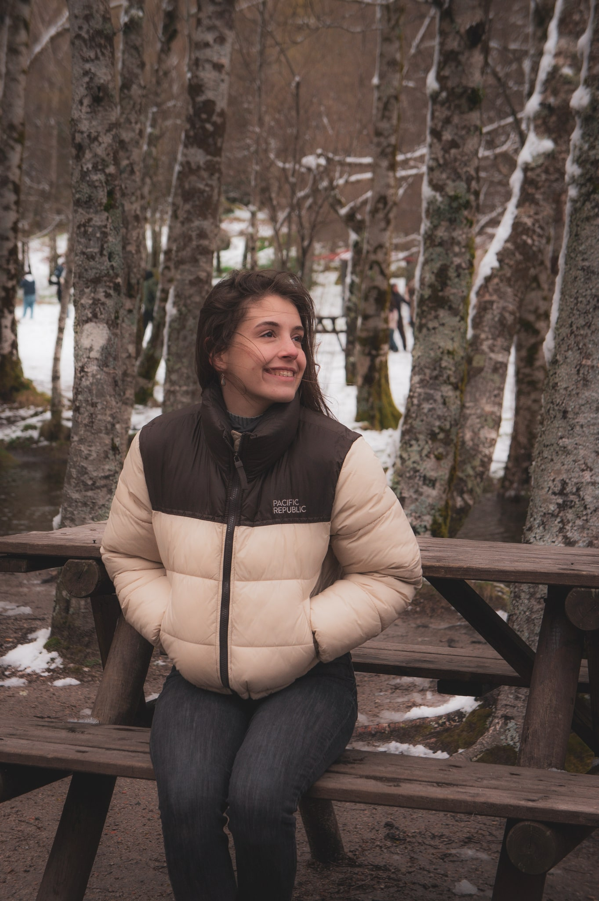

Marta Mendonça
I'm Marta Mendonça, a communication designer based in Lisbon. I'm especially drawn to web and editorial design where I can dive into both interaction and detail. With a logical yet curious mindset, I'm driven by challenges that call for a balance between creativity and functionality. Beyond the screen, I find inspiration in riding my motorcycle and capturing moments through photography.
